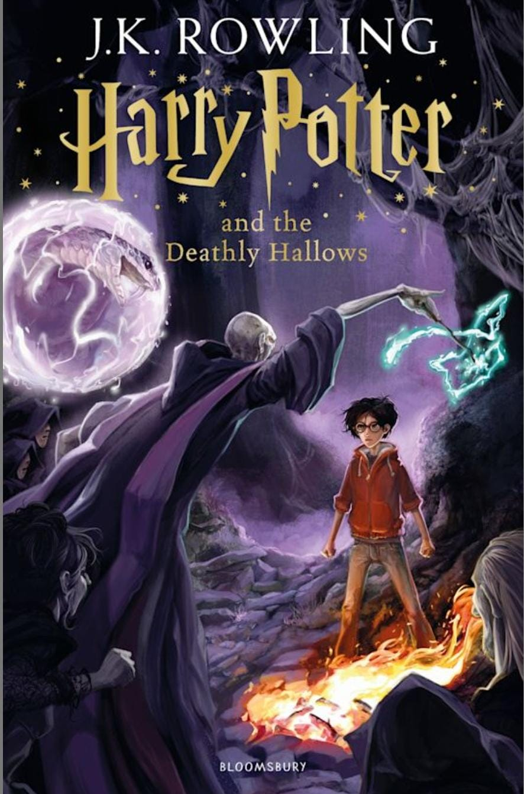

🧙♂️ Harry Potter and the Deathly Hallows

📘 Overview
"Harry Potter and the Deathly Hallows" is the final book in the Harry Potter series, and it serves as both a culmination and transformation of everything that came before. This novel is a war story, a spiritual journey, and a soul-searching odyssey. It breaks the formula of “a school year at Hogwarts” and takes Harry, Ron, and Hermione into the wilderness, where they must face inner and outer demons without the protection of teachers, family, or institutions.
This is not just a fantasy adventure—it’s a story about death, legacy, sacrifice, and love. Rowling closes her series with emotion, philosophy, and brutal consequences.
🧩 Plot Summary
The wizarding world is fully at war. Voldemort has taken over the Ministry of Magic, Hogwarts is under fascist rule, and Harry is on the run. After the death of Albus Dumbledore, Harry, Ron, and Hermione take on his unfinished mission: to locate and destroy Voldemort’s Horcruxes.
They are hunted, homeless, and often hopeless. The trio navigates betrayal, loss, and fear as they uncover secrets buried by Dumbledore, including the mystery of the Deathly Hallows—three legendary magical objects said to make their master the conqueror of death.
As the trio destroys the Horcruxes, Voldemort grows more unstable and desperate. The final battle takes place at Hogwarts, where the castle becomes the last stand of resistance. Friends and mentors die. Harry voluntarily faces death to destroy the piece of Voldemort’s soul inside him—and returns from the brink.
In a final duel, Voldemort is defeated not by power, but by his own arrogance. Love, sacrifice, and mercy win the war.
🌌 Themes and Analysis
1. Death and Acceptance
The entire book is about how different characters face death:
Voldemort tries to defeat death by splitting his soul and seeking power.
Harry learns to accept death and willingly sacrifices himself.
The Deathly Hallows themselves symbolize the choice between mastery of death, avoidance of death, and acceptance of death.
2. Trust and Doubt
Harry is shaken by Dumbledore’s secrets. He discovers Dumbledore’s dark past and must choose whether to continue trusting him. This theme is central to Harry’s maturity—learning that heroes are flawed but still worth following.
3. Love and Sacrifice
From Lily Potter to Harry, from Dobby to Snape, the greatest magic in the series isn’t a spell—it’s the willingness to sacrifice for others. Love is again the ultimate defense against darkness.
4. Power and Corruption
The Ministry becomes authoritarian. Hogwarts is turned into a fascist school. The book explores how institutions crumble under tyranny, and how ordinary people resist in small and large ways.
🧠 Character Development
Harry Potter: This is Harry at his most vulnerable and most courageous. He goes from a teenager reacting to threats to a young man making painful, moral decisions. His self-sacrifice defines him as the true master of death.
Hermione Granger: Resourceful, loyal, and emotionally strong. She becomes the backbone of the trio. Her planning and emotional intelligence save them many times.
Ron Weasley: Experiences jealousy, abandonment, and guilt, but returns to the group as a more mature and brave man. His emotional arc is subtle but essential.
Severus Snape: His final memories reveal his true allegiance: a lifetime of painful, complex loyalty. His love for Lily Potter defines his life. He’s not a perfect man, but a profoundly tragic one.
Albus Dumbledore: Though dead, he looms over the entire story. His flaws are exposed, but so is his wisdom. He is a symbol of the difficult choices good people must make.
Voldemort: His descent into paranoia, destruction, and self-defeat shows the hollowness of evil. He never learns love, and that ignorance is his undoing.
🧱 World-Building and Lore
Introduction of the Deathly Hallows: the Elder Wand, the Resurrection Stone, and the Invisibility Cloak—objects rooted in legend, not just magic.
Godric’s Hollow, Shell Cottage, Malfoy Manor, and Gringotts’ deep vaults—the story spans a wide, dangerous world.
The underground resistance radio show, “Potterwatch,” shows how rebellion survives.
The Battle of Hogwarts becomes the centerpiece of magical warfare, combining raw magic, strategy, emotion, and sacrifice.
🕵️♀️ Symbolism and Subtext
The Resurrection Stone: Temptation of living in the past, not letting go of grief.
The Elder Wand: The destructive hunger for invincibility and dominance.
The Cloak of Invisibility: The only Hallow Harry “masters” because it represents humility and wisdom.
The Forest Again: Harry’s Christ-like journey into death, self-sacrifice, and rebirth.
💔 Emotional Impact
Dobby’s death: Raw, innocent, heartbreaking.
Fred Weasley’s death: A shock that shatters the comfort of comedy.
Snape’s memories: A masterful, tragic reveal that redefines his character.
Harry walking into the forest: Possibly the most emotional moment in the series—a willing sacrifice by a boy who became a man.
🏆 Strengths
Powerful emotional payoff for long-time readers
Complex moral and philosophical questions
Rich symbolism and mythological integration
Realistic portrayal of war, loss, and resistance
Closure for all major character arcs
⚠️ Criticism
The middle section (the camping chapters) can feel slow and repetitive.
Some deaths feel rushed or off-screen (e.g., Lupin and Tonks).
The “Epilogue” (“19 Years Later”) has mixed reception—some find it too neat.
🔍 Best Moments
Infiltration of the Ministry in disguise
Godric’s Hollow visit and graveyard scene
Gringotts’ break-in with a dragon escape
Snape’s “Always.”
The final duel: Harry vs. Voldemort—not with hatred, but truth
Harry burying Dobby without magic
Harry using the Resurrection Stone before facing death
⭐ Rating: 9.8/10
"Harry Potter and the Deathly Hallows" is a bold, mature, and deeply moving finale. It transforms the series from a magical adventure into a spiritual epic. Rowling doesn't just end the story—she explores the deepest human fears: death, betrayal, grief, and choice. And in the end, she answers them not with spells, but with love, sacrifice, and humanity.